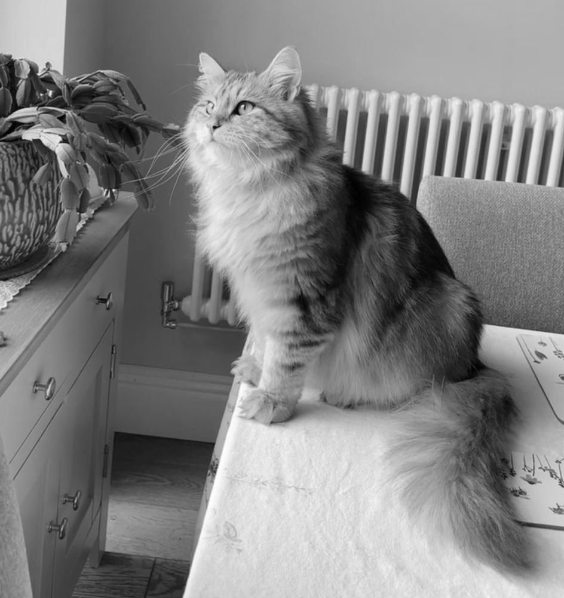

Depending on the Computer Vision task, another preprocessing step we can take is the complete removal of the color channels. By passing each pixels color values through a function we can convert each pixel to a different brightness shade of gray. While this does lose data, it also shrinks the image size and can be useful for certain tasks that do not rely on color and only use brightness, such as edge detection.
Using OpenCV's cvtColor function we can quickly change the entire image
#Convert the Image to a grayscale
#Use BGR to Gray to match imread
gray_image = cv2.cvtColor(image, cv2.COLOR_BGR2GRAY)

